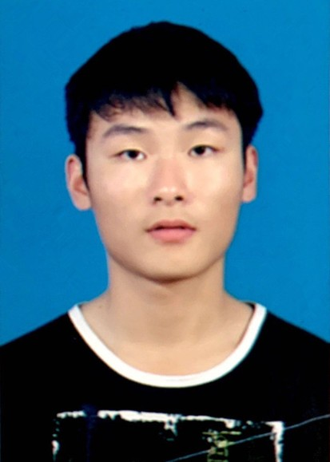
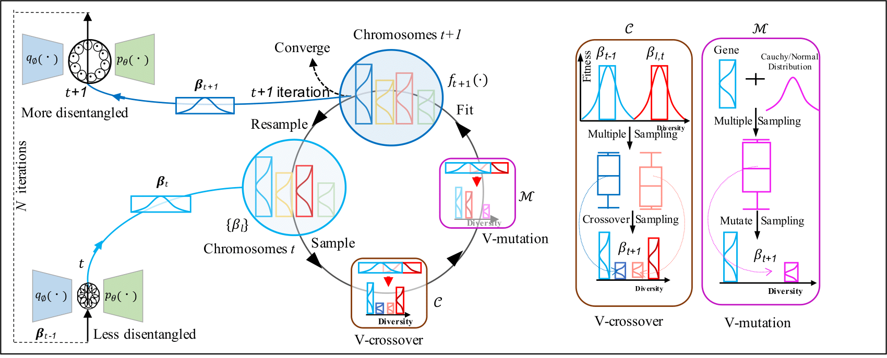
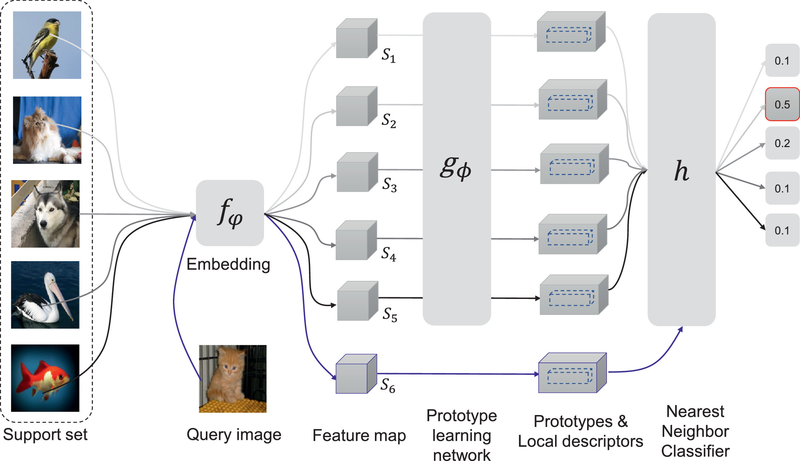
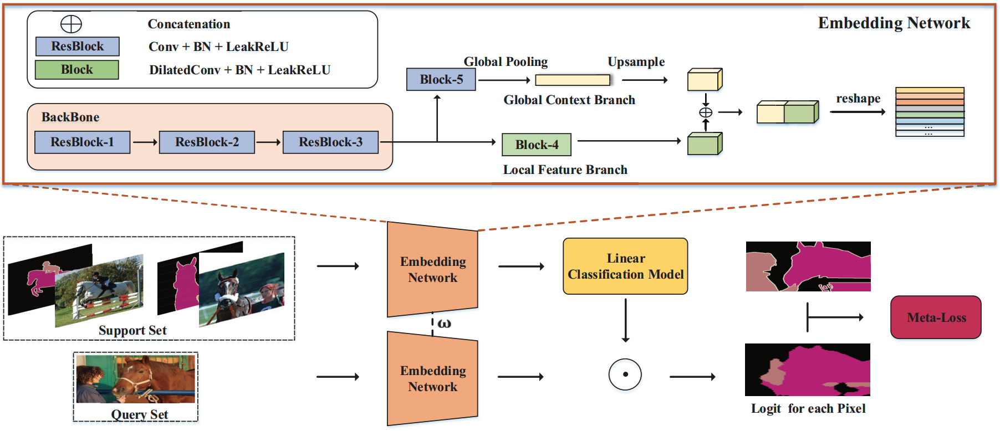

Zhangkai Wu
PhD candidate

About Me
I am Zhangkai Wu. I am currently a PhD candidate in FEIT at the University of Technology Sydney. Fortunately, I am supervised by Professor Longbing Cao. Previously, I received my M.Eng. in Reasoning & Learning group supervised by professor Yang Gao Nanjing University in 2018 and B.Eng. degree in School of Information Engineering at GuangXi University in 2014.



Program Committee Member: IJCAI2024, NeurIPS2024, DSAA2024, ECMLPKDD2025.
Journal Reviewer: TIP, TCSS, Information Fusion, ACM COMPUTING SURVEYS (CSUR), Machine Learning (MLJ), IS (IEEE Information System).
Email: ZHANGKAI.WU@student.uts.edu.au
Address: Zhangkai Wu, Data Science Institute, Level 12, Building 2, UNIVERSITY OF TECHNOLOGY SYDNEY, 61 BROADWAY, Sydney, Australia.